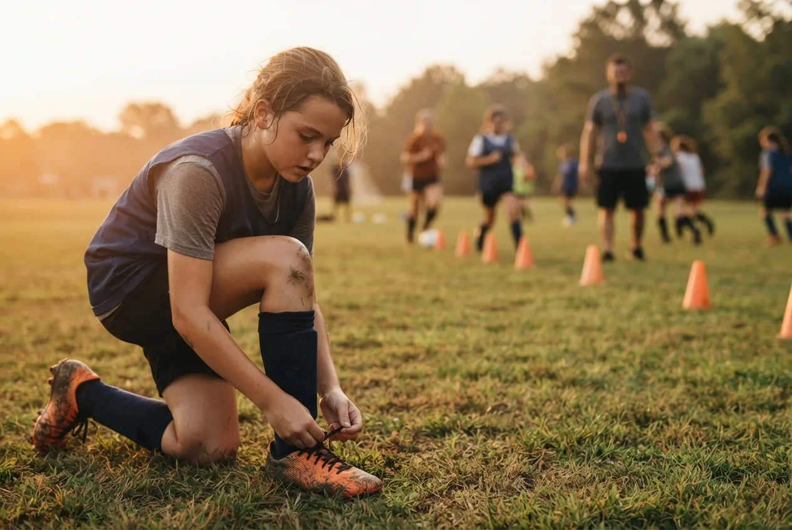
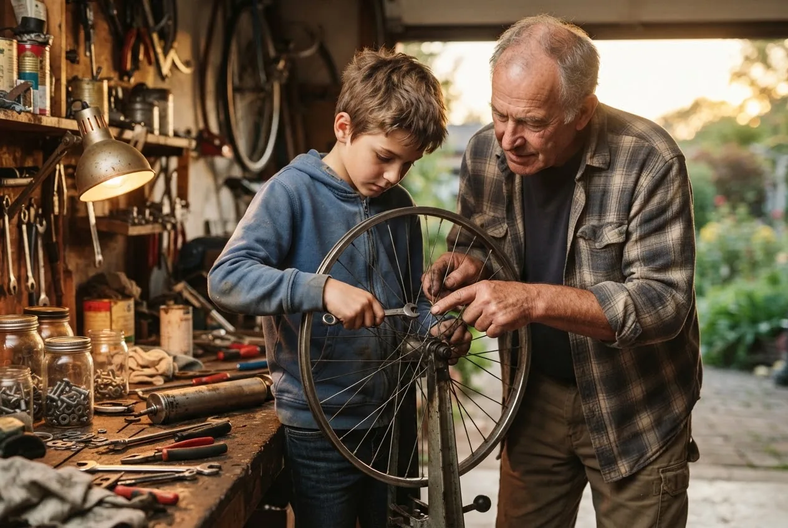
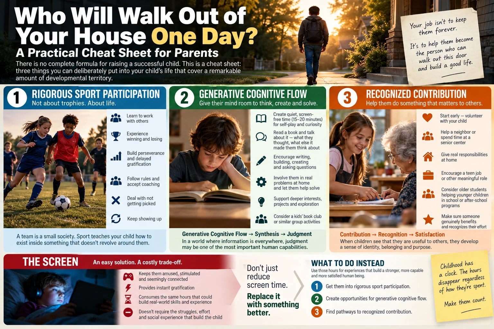

Childhood is made of predictable, repeatable hours, and a screen is the least valuable way to fill them. Put three things in their place instead: rigorous sport participation, Generative Cognitive Flow (reading, building, solving and working beside adults on real problems), and Recognized Contribution through volunteering, real responsibility and a real job. Let me explain.
If you're raising a child today, you've probably asked the question millions of parents are asking: What am I actually supposed to do?
Not what school they should attend. Something more fundamental: What should I do with the tens of thousands of hours of childhood still in front of them to help them become a healthy, happy, capable human being? Someone who can think and exercise judgment, function with other people, absorb loss, delay gratification, contribute to something beyond themselves and eventually walk out of your house capable of building a life of their own.
There is no complete formula for producing that human being. This is a cheat sheet: three things parents can deliberately put into a child's life that cover a remarkable amount of developmental territory.
1. Rigorous Sport Participation
The important word is participation. Your child doesn't need to be a great athlete, win trophies or make the travel team. They need to participate, preferably on a team, because rigorous sport exposes a child to an extraordinary concentration of real life.
They practice when they don't want to, work today for something that may not pay off for months, win and lose, get picked and don't get picked, sit on the bench and receive coaching they don't want. Then they come back and participate again.

A team is a small society. It has rules you didn't create, authority you don't control, people you didn't choose and obligations to the group. You learn how to exist inside something that doesn't revolve around you. It's practice being stitched into society.
Sport also forces delayed gratification. There is no swipe that creates fitness, muscle memory or mastery. You train, repeat, struggle and improve, a counterweight to the instant gratification surrounding children today.
And children need to learn how to lose. Sometimes you work your ass off and somebody else gets picked. Sometimes you do everything right and still lose. A child gets to experience real disappointment while the stakes are still survivable, discover that the world didn't end, and learn to come back.
2. Generative Cognitive Flow
This is the hardest of the three because there's no obvious place to sign up. The first step is simple: give their mind room to operate.
Let a young child learn to play by themselves without a screen or an adult programming every minute. Give them fifteen or twenty quiet minutes to decide what to do. Let boredom survive long enough to become curiosity.
Reading is another starting point. Have them read a book, then sit down afterward and ask what they thought. Why did a character do that? What would they have done? What else did the story make them think about? A kids' book club does this socially. Ask them to write their own story, build something or solve a problem nobody has already answered.
Bring them into real adult problems too. If Grandpa is fixing something, let them work beside Grandpa. If you're building, repairing, cooking or planning, involve them instead of outsourcing the experience along with the job. Children once found these apprenticeships naturally inside families; now parents have to create them deliberately.

The pathway is Generative Cognitive Flow → Synthesis → Judgment. When machines provide answers instantly, judgment is becoming one of the most important human capabilities. AI can amplify a child's cognition, but there's a difference between technology amplifying their thinking and substituting for it. Create protected moments where your child has to think, connect, imagine, solve and generate for themselves.
3. Recognized Contribution
Children need to discover that they matter to other people, not because somebody tells them they're special, but because they did something that mattered.
Start early. If you volunteer, take your child. Let them see contribution before they can pursue it, then give them something real to do. Help a neighbor. Spend time at a senior center. Help younger kids at school or in after-school programs. Take responsibility for something at home. Build or fix something somebody needs. As they get older, encourage a real job, even though teen work has become harder to find. Those jobs were developmental infrastructure as much as employment.
What matters is that somebody genuinely benefits from their effort and recognizes it. The loop is simple: Contribution → Recognition → Satisfaction. Repeated often enough, a child discovers that people depend on them, that they belong somewhere and that their actions have value. That's how recognized contribution becomes part of identity and another way a child becomes stitched into society.
And Then There Is the Screen
A screen can keep a child amused, stimulated and seemingly connected for hours. For an exhausted parent, that's an easy solution. But childhood has a clock, and the hours disappear regardless of how they're spent.
Those are hours a child could spend learning to exist with other people, lose and recover, think, create and contribute. So telling parents to "reduce screen time" isn't useful. The obvious response is: Okay. What the fuck do you want them to do instead?
Here's a better answer: get them into rigorous sport participation. Create opportunities for Generative Cognitive Flow. Find pathways to Recognized Contribution.
That's it. A practical cheat sheet for how those tens of thousands of hours get spent.
Someday the practices end, school ends and the bedroom empties. The child who once needed you for almost everything opens the front door and begins building a life you cannot build for them.
Who do you hope walks out of your house one day—and what experiences are you giving them now to help that person emerge?
